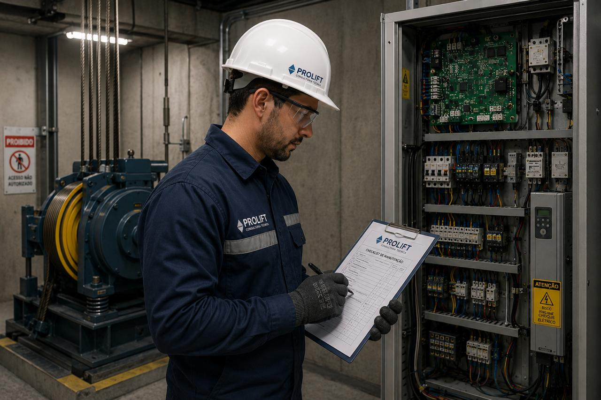

Consultoria técnica independente para condomínios e administradoras que Que querem mais controle, segurança, performance e economia.
Fala com nosso ConsultorSoluções técnicas especializadas para aumentar a segurança, performance e confiabilidade dos elevadores.
Avaliação completa das condições dos elevadores, identificando riscos, falhas e oportunidades de melhoria para garantir segurança e conformidade técnica.
Verificamos se a manutenção está sendo executada corretamente e analisamos contratos para identificar cobranças indevidas, serviços não executados, falhas recorrentes e oportunidades de redução de custos.
Estudo técnico do funcionamento dos equipamentos para reduzir, falhas, paralizações e gastos inesperados.
Estudo do uso dos elevadores no edifício para otimizar o desempenho do sistema e diminuir filas nos horários de pico.
Elaboração de relatórios técnicos claros e detalhados para síndicos, administradoras para tomadas de decisões estratégicas.
Analisamos a vida útil do elevador e a disponibilidade de peças no mercado, elaborando um plano de modernização personalizado para aumentar segurança, confiabilidade e desempenho, evitando custos desnecessários.
Problemas ocultos na manutenção podem gerar riscos para os usuários e para os equipamentos, paralizações constantes e gastos inesperados.
A PROLIFT realiza inspeções e análises técnicas especializadas para identificar não conformidades, validar contratos de manutenção e melhorar a performance operacional dos elevadores.
Mais segurança, transparência e confiança para sua operação.
Solicitar análise técnicaA PROLIFT Consultoria Técnica é uma empresa especializada na gestão e avaliação de sistemas de transporte vertical.
Atuamos de forma independente e imparcial, oferecendo suporte técnico qualificado a condomínios, administradoras e empresas que necessitam de uma visão especializada sobre a operação, manutenção e conformidade de seus elevadores.
Nossa equipe é formada por profissionais com sólida experiência no setor, capacitados para identificar falhas, avaliar contratos, analisar performance e garantir que os equipamentos operem dentro dos mais rigorosos padrões técnicos e normativos.
Na PROLIFT, entregamos mais do que relatórios, entregamos segurança, eficiência e tranquilidade para a gestão dos elevadores.

Uma análise técnica completa para ajudar sua gestão a tomar decisões com mais segurança, clareza e economia.
Documento claro e detalhado com os principais pontos identificados na avaliação dos elevadores.
Verificação do cumprimento do plano de manutenção contratado pela empresa mantenedora.
Análise do funcionamento, eficiência, tempo de resposta e desempenho dos equipamentos.
Identificação de falhas, paralizações recorrentes e pontos que afetam diretamente o usuário.
Levantamento dos problemas que podem comprometer a segurança dos usuários e o patrimônio.
Registro fotográfico dos principais pontos analisados para facilitar o entendimento da gestão.
Sugestões práticas para aumentar segurança, confiabilidade, eficiência e vida útil dos equipamentos.
Suporte especializado para auxiliar síndicos, administradoras e gestores na tomada de decisão.
Uma consultoria técnica independente, criada para ajudar condomínios, administradoras e empresas a terem mais controle, segurança e economia na gestão dos elevadores.
Avaliamos os elevadores de forma imparcial, sem vínculo com empresas de manutenção.
Identificamos riscos, falhas e pontos críticos que podem comprometer a segurança e o conforto dos usuários.
Analisamos contratos, cobranças e serviços para evitar gastos indevidos.
Verificamos se o plano de manutenção preventiva está sendo cumprido corretamente.
Entregamos informações técnicas de forma simples para facilitar a tomada de decisão.
Auxiliamos na gestão técnica dos elevadores com mais transparência e confiança.
Não. A PROLIFT atua de forma independente, realizando análises técnicas, inspeções e avaliações para garantir que os serviços de manutenção estejam sendo executados corretamente.
Sim. Atendemos condomínios residenciais, comerciais, administradoras e empresas que precisam de apoio técnico na gestão dos elevadores.
O relatório pode incluir registros fotográficos, diagnóstico técnico, pontos de atenção, análise de manutenção, riscos identificados e recomendações de melhoria.
Sim. A análise técnica pode identificar cobranças indevidas, serviços não executados, falhas recorrentes e oportunidades de otimização nos contratos de manutenção.
Entre em contato para solicitar uma análise técnica, tirar dúvidas ou receber mais informações sobre nossos serviços.
Av. Miguel Antônio Fernandes, 1333
Bloco A • Sala 320
Recreio dos Bandeirantes – Rio de Janeiro/RJ